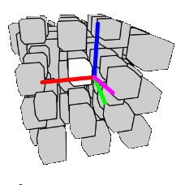

Morpion 4D

Un morpion qui repousse notre perception de l'espace. Jouez à des parties de morpion en 3D, 4D et même plus !
Développement de calculs matriciels pour transformer des positions de n-dimension en 2D.
Étudiant au CNAM ENJMIN, Je recherche une alternance pour la periode 2025-2028.
Le rythme : 1j formation / 4j entreprise.
Le lieu : partout en France.
Vous trouverez ici tous les détails sur la formation.
Mon adresse mail : evanndev.contact@gmail.com
Je reste également disponible sur LinkedIn.
Bonne navigation! TEST
Un morpion qui repousse notre perception de l'espace. Jouez à des parties de morpion en 3D, 4D et même plus !
Développement de calculs matriciels pour transformer des positions de n-dimension en 2D.
Roguelite réalisé en équipe durant la PirateJam 16 sur le thème : you are the weapon.
Première réalisation en game jam.
Une app discord reprenant l'univers de Death Note.
Mise en place d'un flow de développement. Maintenance et optimisation pour une utilisation active. (utilisée dans +500 serveurs)
Un jeu d'esquive coloré multiplayer entièrement réalisé en C++
TriangleOS est une biblithèque javascript pour créer des sites web avec une apparance de système d'exploitation.
Mise en place d'une distribution de packet via npm.
Jeu de labytinthe configurable, réalisé en se limitant à p5 2D.
Réalisation des calcul de profondeur et perspective.
Calculatrice permetant de dériver des fonctions.
Méthode de calcul infixe/postfixe pour réaliser des calculs parenthèsés avec variable.
réalisé en duo
Trouver les lettre manquantes à l'intersection de deux mots.
Dévloppé en couplant une compilation des dictionnaires par python et une application web en javascript.
projet scolaire
python
|||
Pratiqué au lycée et sur plusieurs projets algorithimiques.
JS / TS
||||
Pratiqué lors de multiples projets (web, p5.js, app discord, vue).
C++
|||
Création d'un jeu complet par la bibliothèque SFML.
Web deseign
||
Multiples travaux sur web et création d'interfaces.
Godot
|||
Utilisé en jam et sur d'autres projets.
Unity
||
Déjà pratiqué, sera approfondi durant les 3 mois de formation.
Gestion de la pression
|||
Le travail en animation et les jam m'ont mis à rude épreuve.
Travail d'équipe
||||
Plusieurs projets, courts et longs réalisés en équipe.
Réseaux sociaux
||
Communication et gestion de communautée concernant les projets.
J'ai effectué et validé les 3 étapes de formations.
▸ Vivre une première experience professionnelle intense. ▸ Travailler sur l'imaginaire. ▸ Penser la conception de jeux d'une autre manière.
Je sais administrer des gestes de premiers secours, Et garder mon calme en situation délicate.
Mention bien.
Spécialités Maths et NSI (+ Maths expertes).
Vacances 2024/2025
Animation en centre de loisirs.
▸ Travailler sur un imaginaire précis ▸ Éxperimenter un rythme soutenu (50-60h/sem)
Juillet/Août 2025
Travail dans l'entreprise Keysia, sur la création d'un site d'analyse financière.
▸ Travailler en équipe ▸ Adopter un workflow de production
licence informatique jeux vidéos
1j formation / 4j entreprise
voir la plaquette voir le programme voir le calendrier
Mais es-ce vraiment le cas ?